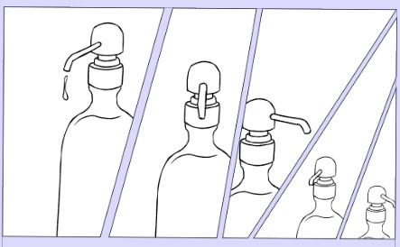

The components of manga includes the picture(drawing of depiction of objects, background and figures), the words(usually character’s lines)including onomatopoeia, text bubbles, and cuts/frames that surrounds the picture. The goal of manga is to convey a story to the reader. Think of drawing manga as a directing a cuts for each frame. You will need to think of props(settings), characters, lines of words and more.
Although manga needs specific elements to be considered as manga, but outside of that you can be free about your choice of composition.